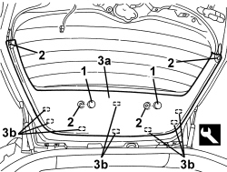

7015A06 TAILGATE UPPER INTERIOR PANEL - R.R.
- Path
- Procedures > 70 FITTINGS > 7015 TAILGATE/FLAP > 7015A TAILGATE ASSEMBLY > 7015A06 TAILGATE UPPER INTERIOR PANEL - R.R.
- Kind
- repair procedure (removal / refitting; the operation number is the code)
- Applies to
- all engines; all production periods
- Interactive page
- https://sloeber94.github.io/elrnDB/#/939005349
Applies to: all engines; all production periods
 Removing
Removing
 Refitting
RefittingOp. 7040G36 BULB HOLDER FOR LOAD CARRYING COMPARTMENT lighting on tailgate - R.R.
Op. 7015A05 TAILGATE LOWER INTERIOR PANEL-R R
1. Remove the covers releasing the retainers.
2. Undo the bolts.
3. Remove the inner panel (3a) releasing the inner retainers (3b) using the special tool.
Tool | Description | Function | Validity |
|---|---|---|---|
1823015000 | Knife | Retainer removal |

Applies to: all engines; all production periods
Refitting
Removing- Check that the inner panel is not damaged.
- Position the panel and engage the inner retainers.
- Tighten the bolts.
- Position the covers attaching the retainers.
Op. 7015A05 TAILGATE LOWER INTERIOR PANEL-R R
Op. 7040G36 BULB HOLDER FOR LOAD CARRYING COMPARTMENT lighting on tailgate - R.R.
Topics linked from this page (2)
- 7015A05 TAILGATE LOWER INTERIOR PANEL-R R
- 7040G36 BULB HOLDER FOR LOAD CARRYING COMPARTMENT lighting on tailgate - R.R.